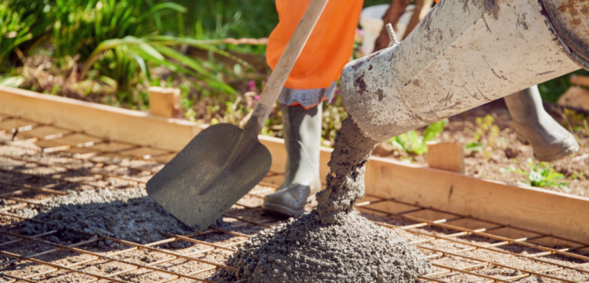

Durable, Custom-Designed Concrete Patios Built for Melbourne Homes
A well-built concrete patio turns an underused backyard into a functional extension of your home. Unlike wood decks that require annual staining, splintering board replacements, and pest treatments—or loose paver patios that shift and sprout weeds between joints—a poured concrete patio from Clacy Concrete offers decades of clean, stable outdoor living with minimal upkeep.
Whether you want a simple rectangular grilling pad off your back door or a multi-zone entertainment patio complete with curved borders, built-in fire pit pads, hot tub foundations, and connecting walkways, our experienced concrete patio contractors in Melbourne, VIC tailor every square foot to your yard's layout and your family's lifestyle.

Popular Concrete Patio Finishes & Design Options
Today's concrete patios go far beyond plain gray slabs. At Clacy Concrete, we help homeowners across Melbourne and Gippsland & South East Melbourne select the ideal texture, color, and edge detail to complement their home's exterior architecture and landscaping:
- Classic Broom Finish: A crisp, slip-resistant brushed texture ideal for pool decks, dining areas, and high-traffic family patios.
- Picture-Frame Troweled Borders: Smooth hand-tooled edges framing a broom-finished interior for a clean, architectural look.
- Exposed Aggregate Concrete: Washed surface revealing natural river stone or quartz pebbles for rich texture and superior traction.
- Integrally Colored Concrete: Earthy tans, warm charcoals, and slate grays mixed directly into the concrete batch for fade-resistant color.
- Stamped & Textured Patios: Seamless stone, slate, or wood-plank patterns—explore more on our Stamped Concrete page.
How Clacy Concrete Builds Concrete Patios That Last
Many patio cracks and settling issues happen because an inexperienced crew skips proper excavation or pours too thin over uncompacted topsoil. Our Melbourne patio installation process follows strict structural standards from day one:
1. Site Layout, Excavation & Grading
We mark out your exact patio footprint, verify setbacks and underground utilities, and excavate organic topsoil and roots down to firm subsoil. Just as importantly, we laser-grade the patio with a subtle slope (typically 1/8 to 1/4 inch per foot) away from your house foundation so rainwater never pools against your siding or basement walls.
2. Compacted Gravel Sub-Base
We install a uniform layer of crushed limestone or road-base gravel and compact it with a vibratory plate compactor. This drainage blanket prevents frost heave and provides even support across the entire slab.
3. Formwork & Steel Reinforcement
Our carpenters set rigid straight or curved forms and install 6x6 welded wire mesh or #3/#4 steel rebar grids elevated on chairs so the steel sits in the structural middle of the slab—never flat on the dirt. If you are planning a heavy hot tub, outdoor kitchen, or pergola footings, we thicken the concrete slab and add extra rebar in those load zones.
4. 4,000+ PSI Concrete Pour, Control Joints & Sealing
We pour air-entrained ready-mix concrete rated at 4,000 PSI or higher to resist Melbourne freeze-thaw cycles. After floating and finishing, we tool or saw-cut control joints in balanced square panels to guide natural concrete shrinkage, then apply a breathable penetrating or acrylic sealer to guard against stains, moisture, and UV wear.
Concrete Patio Cost Factors in Melbourne, VIC
Homeowners often ask what a new concrete patio costs per square foot. Because every yard is unique, Clacy Concrete provides itemized on-site quotes based on total square footage, demolition of any old patio or deck, backyard access for wheelbarrows or concrete pumps, slab thickness (4 inches standard vs. 5–6 inches for hot tubs), and decorative upgrades like integral color or borders.